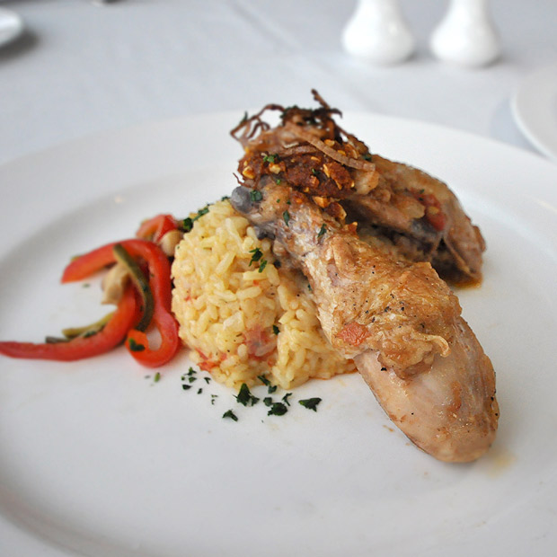

Temperature
Minimum internal temperature 175°F
Serving Size
1 piece each
Yield
10 servings
Chef's Note
Minimum internal temperature 175°F
Techniques
Braising
Geographic Region
Spain
Catalan Chicken
Ingredients
Main Dish
- 2 ounces total Olive oil
- 6 pounds Chicken legs, quarters
- Salt, Kosher, To taste
- Black pepper, ground, To taste
- 1 pound Onions, peeled and sliced
- 2 each Red bell peppers, sliced thinly
- 6 each Garlic cloves, minced
- 2 pounds Roma tomatoes, peeled, seeded, chopped
- 6 ounces Dry sherry
- ½ teaspoon Saffron, soaked in 1 oz (30 ml) boiling water
- 2 each Bay leaf
- 1 each Cinnamon stick
Almond Topping
- 1-2 ounces Olive oil
- 4 tablespoons Breadcrumbs, Panko or Japanese breadcrumbs
- 2 teaspoons Smoked paprika
- 3 tablespoons Almonds, sliced
Preparation
- Gather all the ingredients and equipment.
- Heat oil in a large braising pan over medium-high heat. Season the chicken with salt and pepper and brown on both sides well. Remove and set aside.
- Add the onions, red peppers and garlic to the pan. Sauté lightly to soften.
- Add the tomatoes, sherry and saffron with its soaking water. Simmer the mixture to develop the flavor and allow to reduce slightly, about 3 minutes.
- Add the bay leaf and cinnamon stick and season the mixture with salt and pepper.
- Return the browned chicken legs; nestle into the sauce.
- Cover the pan and braise for about 30 minutes or until the chicken is tender and reaches an internal temperature of at least 175ºF (79ºC).
- While the chicken is cooking, make the almond topping. Heat the olive oil in a small pan. Add the breadcrumbs and almonds. Cook, stirring, until toasted brown. Remove from heat and add the paprika.
- To serve, arrange the chicken, top with some of the pepper/onion sauce and sprinkle the top with some of the almond crumbs.
- Serve immediately or hold hot at 135ºF (57ºC) or above.